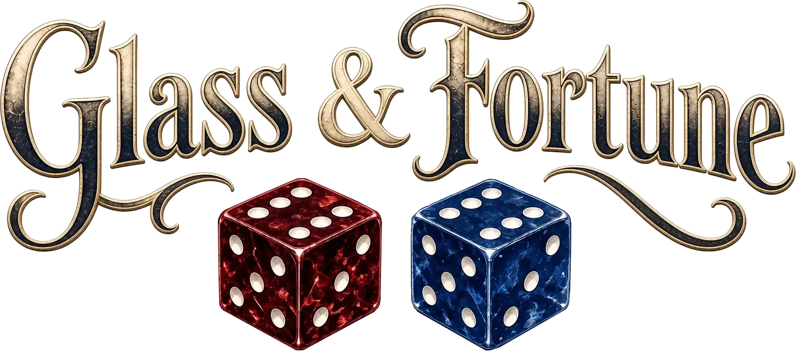

Website teaser
Take a seat at Morrow’s table
Learn to persuade fate.
Make a hand from five glass dice.
Change a number. Change a colour. Then cast.
- Follow one practice handWe’ll highlight exactly what to do.
- Play your first ReadingReach 80 points with three Favour per cast.
Game music and Morrow start when you begin. Mute either at any time.
Guided practice
Morrow stacked the glass.
Reading score0 / 650650 needed to pass
Tint colour orderOne step to the right. Sea Glass wraps to Garnet.
Arrange dice
Pair
51points
How this scores
Casting banks the score of all five dice.
Casts left1
3 / 3 Favour
Select one die, then choose an action. Every action costs 1 Favour.
Upcoming playtest
The table will open again soon.
Join the Glass & Fortune playtest and help shape what the glass reveals.
Join the upcoming playtestTable rule Practise TURN and TINT; learn when RECAST is a gamble.